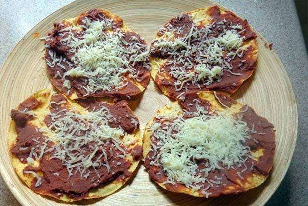
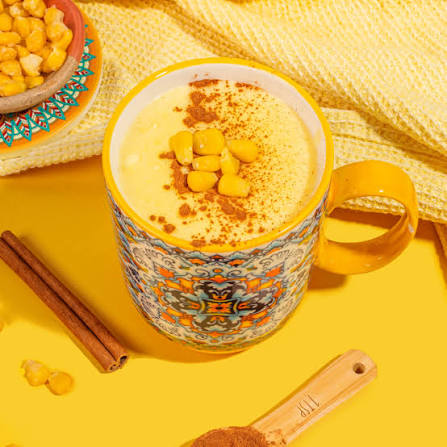
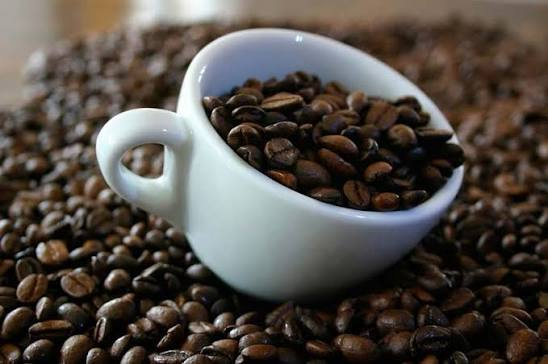
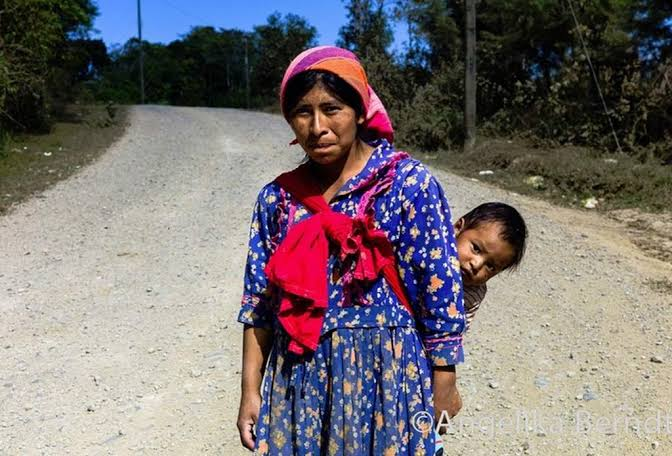
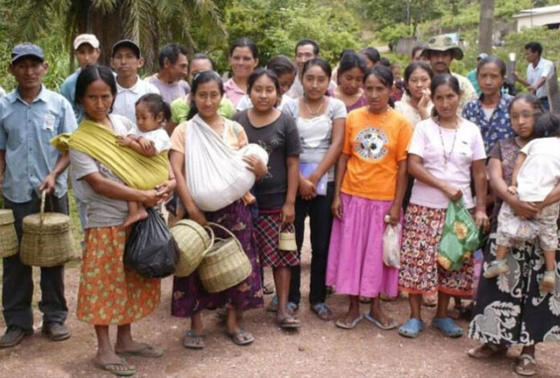
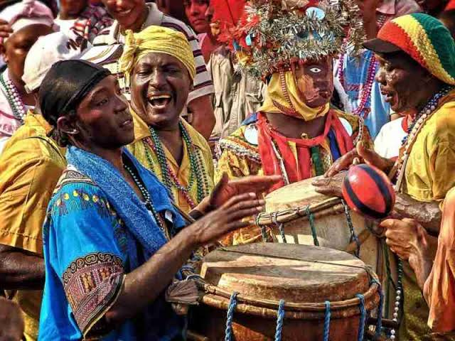
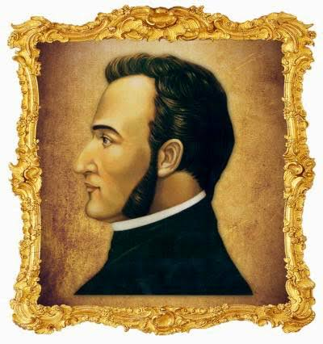
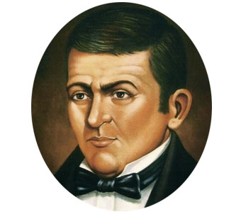
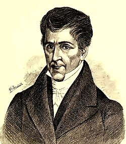

La baleada es el platillo más representativo de la gastronomía hondureña, consistente en una
tortilla grande y fina de harina de trigo doblada por la mitad y rellena tradicionalmente con frijoles
refritos cremosos, queso seco rallado y mantequilla crema. Este alimento económico y sustancioso, consumido
habitualmente en el desayuno o la cena, también admite ingredientes adicionales como huevo revuelto, aguacate,
plátano maduro frito y diversas carnes para crear sus versiones especiales.
Catrachas

Las catrachas son otro platillo tradicional y popular de la cocina hondureña,
elaborado sobre una base de tortilla de maíz frita hasta quedar crujiente
(similar a un tostada). Encima se le Unta una capa generosa de frijoles refritos
condimentados y se le corona con queso seco rallado; en muchas variantes también se
les añade mantequilla crema, chismol (pico de gallo) o salsa de tomate casera. Son
sencillas, económicas y muy crujientes, consumidas frecuentemente como botana, entrada
o cena ligera en los hogares de Honduras.
Atol Hondureño

El atol de elote es una bebida caliente y cremosa muy tradicional de la gastronomía
hondureña, elaborada a base de granos de elote tierno licuados o molidos con leche,
agua, azúcar y una pizca de sal, perfumada frecuentemente con canela en raja. Tras
cocinarse a fuego lento hasta alcanzar una textura espesa y reconfortante, se sirve
caliente (a menudo espolvoreado con canela en polvo) y se consume habitualmente como
merienda o durante las tardes frescas, destacando por su sabor dulce y aroma
característico al maíz fresco.
Cafe Hondureño

El café hondureño es una de las bebidas más emblemáticas y un pilar de la identidad
nacional, reconocido mundialmente por su alta calidad y sus perfiles de sabor complejos
que van desde notas a chocolate y caramelo hasta matices cítricos y frutales. Cultivado
principalmente en zonas montañosas de gran altura bajo la sombra de bosques autóctonos, se
elabora a partir de granos 100% arábica de variedades como Catuai, Parainema y Bourbon.
Consumido diariamente en todo el país a cualquier hora a menudo acompañado de repostería
local o pan dulce, no solo es el acompañante indispensable de la mesa hondureña, sino también
uno de los principales productos de exportación agrícola del país.
Etnias de Honduras
Lencas

Los lencas son el grupo indígena más numeroso de Honduras, asentado principalmente
en la zona centro-sur y occidental del país (en departamentos como Intibucá, La Paz y Lempira).
Poseedores de una rica herencia precolombina que precedió e interactuó con los mayas, han
preservado una profunda conexión con la tierra y el medio ambiente a través de sus tradiciones
agrícolas, su cosmovisión y ceremonias ancestrales como el Guancasco (un rito de paz y hermandad
entre pueblos). Aunque su lengua originaria se encuentra extinta en la actualidad, su identidad
cultural se mantiene viva a través de su gastronomía basada en el maíz y hierbas locales, sus
prácticas comunitarias y, de manera destacada, su artesanía, famosa internacionalmente por la
alfarería de barro negro y lenca moldeada de forma artesanal.
Tolupan

Los tolupanes (también conocidos históricamente como jicaques) son uno
de los pueblos indígenas más antiguos de Honduras, asentados principalmente
en el departamento de Yoro y en la Montaña de la Flor (Francisco Morazán).
Organizados en comunidades dirigidas por caciques, han logrado preservar aspectos
fundamentales de su identidad ancestral, destacando su lengua materna, el tol, así como
sus tradiciones de caza, pesca y cestería artesanal. Mantienen una cosmovisión
profundamente vinculada con la naturaleza y el respeto a la tierra, diferenciándose
por un estilo de vida seminómada en el pasado que se transformó en una agricultura
comunitaria de subsistencia basada en el cultivo de maíz, frijoles, yuca y café.
Garifuna

Los garífunas son un grupo Étnico afrodescendiente que habita principalmente
en la costa caribeña de Honduras, descendientes del mestizaje entre africanos
escapados de barcos negreros e indígenas caribes y arahuacos en la isla de San Vicente,
desde donde fueron deportados a Roatán en 1797. Poseedores de una identidad viva
reconocida por la UNESCO como Patrimonio Cultural Inmaterial de la Humanidad, destacan
por conservar su propio idioma (de origen arahuaco con influencias africanas y europeas),
su religión ancestral sincrética (Dugu) y una rica expresión artística dominada por
ritmos como la punta, ejecutada con tambores tradicionales (garawoun). Su estilo de vida
costero está profundamente ligado a la pesca y a una gastronomía distintiva basada en el
plátano, la yuca (con la que elaboran el casabe) y el coco (base de platillos como la machuca y el tapado).
Proceres Patrios
Francisco Morazan

José Francisco Morazán Quesada (1792–1842) es la figura histórica y militar más trascendental
de Honduras y de América Central, reconocido principalmente por su papel como Presidente de la
República Federal de Centroamérica y por ser el máximo defensor del unionismo centroamericano.
Militar autodidacta y pensador liberal, gobernó la región en un periodo de profundas transformaciones
orientadas a la modernización del Estado, la educación laica, la libertad de prensa y el comercio libre,
enfrentando firmemente las fuerzas conservadoras y clericales de la época. Nacido en Tegucigalpa, su
legado como estratega y visionario sigue siendo el símbolo supremo de la integración centroamericana,
inmortalizado en el departamento que lleva su nombre y en el billete de 5 lempiras.
Dionisio de Herrera

Dionisio de Herrera (1781–1850) fue un destacado abogado, político y pensador liberal
hondureño, recordado principalmente por haber sido el primer Jefe de Estado de Honduras (1824–1827)
y el autor de la primera Constitución del país en 1825. Tío de Francisco Morazán y de José Cecilio
del Valle, Herrera fue una figura clave de la Ilustración centroamericana que promovió la división de
poderes, los derechos ciudadanos, la educación pública y la libertad de prensa, además de decretar
el primer escudo de armas nacional. Su perfil de estadista moderado e intelectual comprometido con el
desarrollo institucional de la región tras la independencia trasciende fronteras, habiendo ejercido
también como Jefe de Estado de Nicaragua y siendo inmortalizado en el billete de 20 lempiras.
Jose Cecilio del Valle

José Cecilio del Valle (1777–1834) fue un eminente erudito, político, abogado y periodista
hondureño, reconocido como uno de los intelectuales más brillantes de la Ilustración hispanoamericana
y por redactar el Acta de Independencia de Centroamérica en 1821. Nacido en Choluteca y apodado
"El Sabio" por su vasto conocimiento en filosofía, economía, matemáticas y derecho, fue el creador
del periódico El Amigo de la Patria, desde donde promovió el progreso, la educación y la integración
continental. Aunque inicialmente favorecía una transición cautelosa hacia la emancipación, se convirtió
en una figura clave de la naciente república, llegando a ser electo Presidente de la República Federal
de Centroamérica en 1834, cargo que no pudo asumir debido a su muerte repentina poco antes de tomar
posesión. Su legado intelectual y patriótico perdura como pilar de la historia nacional y está inmortalizado
en el billete de 100 lempiras.